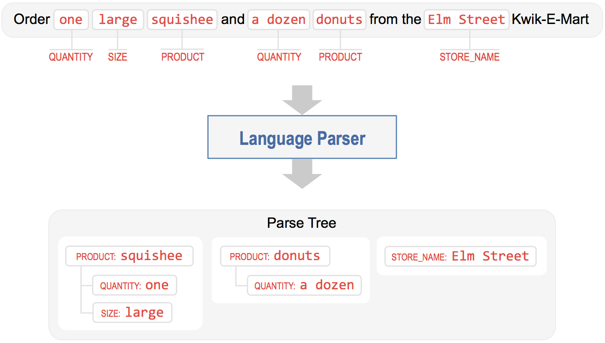

Step 8: Configure the Language Parser
Title goes here
Title goes here
Title goes here
Title goes here
Title goes here
Invoked after the other NLP models have run, the language parser is the final component of the natural language processor. Its job is to find relationships between the extracted entities and group them into a meaningful hierarchy. The parser analyzes the information provided by all the previous NLP models and outputs a data structure called the parse tree, which captures how different entities relate to each other.
Consider the use case where you not only want to check the hours of your local Kwik-E-Mart, but also order items to pick up from the store in advance. To handle this functionality, we could define an entity type called product which specifies the name of an item you want to order. We could also define other entities such as size and quantity which provide more information about the items in your order. The language parser takes these entities, which are detected by the entity recognizer, and parses them into a representation which reflects a meaningful real-world organizational structure. This data structure can then be used to submit the order to a point-of-sale system, for example, to complete your order.
Consider the following sample query:
{kind=link}
As illustrated, the language parser organizes detected entities into a collection of entity groups which comprise the parse tree. Each entity group has a main entity and possibly a collection of related child entities (or attributes) which further describe the parent entity. In linguistics, the main entity is called the Head and the related entities are called Dependents.
The example query above contains three main pieces of information: the name of the store where the user wants to place an order, and the two products the user wants. This produces three entity groups, two with product entities as the head and one with a standalone store_name entity. The product entity has attributes like quantity and size that modify it, and are therefore grouped together with the head as its dependents.
Natural language parsing is a long-studied problem in computer science and the approaches used depend on the end goal and the depth of linguistic analysis required. Methods range from simple ones like rule-based and regex-based parsing to more sophisticated techniques like syntactic parsing and semantic parsing. While parsing remains an active area of research, commercial applications like Siri, Cortana, Alexa, and Google Assistant rely on approaches that work well in practice and are easy to build, debug, and maintain. Such systems almost always leverage a good rule-based parser, optionally augmented by a statistical parser if enough human-annotated parsed data is available for training.
The language parser in Workbench supports everything from the simplest rule-based systems to state-of-the-art syntactic and semantic parsers. Out of the box, Workbench comes with a configuration-driven dependency parser (a kind of Syntactic Parser), similar to what’s used in most commercial conversational applications today.
Getting started with the parser merely requires specifying a parser configuration which defines the entity hierarchy in your application. For the simple example above, the parser configuration can be defined as follows.
{
'product': ['quantity', 'size']
}
With the parser configuration in place, we train the NLP models and then test the parser, as follows.
cd $WB_APP_ROOT
python
from mmworkbench.components.nlp import NaturalLanguageProcessor
nlp = NaturalLanguageProcessor('.')
nlp.build()
nlp.process('Order one large squishee and a dozen donuts from the Elm Street Kwik-E-Mart.')
{'text': 'Order one large squishee and a dozen donuts from the Elm Street Kwik-E-Mart.',
'domain': 'store_info',
'intent': 'get_store_hours',
'entities': [{'text': 'Elm Street',
'type': 'store_name',
'role': None,
'value': [{'cname': '23 Elm Street',
'score': 44.777046,
'top_synonym': 'Elm Street',
'id': '1'},
{'cname': '104 First Street',
'score': 7.0927515,
'top_synonym': '104 First Street',
'id': '5'},
{'cname': 'East Oak Street',
'score': 7.0927515,
'top_synonym': 'East Oak Street',
'id': '12'},
{'cname': '257th Street',
'score': 6.958622,
'top_synonym': '257th Street',
'id': '18'},
{'cname': 'D Street',
'score': 6.7008686,
'top_synonym': 'D Street',
'id': '19'},
{'cname': '181st Street',
'score': 6.630241,
'top_synonym': '181st Street',
'id': '17'},
{'cname': 'West Oak Street',
'score': 6.249679,
'top_synonym': 'West Oak Street',
'id': '11'},
{'cname': '156th Street',
'score': 6.1613703,
'top_synonym': '156th Street',
'id': '15'},
{'cname': 'Peanut Street',
'score': 6.1613703,
'top_synonym': 'Peanut Street',
'id': '20'},
{'cname': 'Little Italy Store',
'score': 5.2708626,
'top_synonym': 'Third Street',
'id': '7'}],
'span': {'start': 53, 'end': 62}}]
}
Some of the entities in the Natural Language Processor’s output now include a children field that contains a list of all dependent entities related to that head entity.
The Workbench language parser is a versatile component which can be used to implement a variety of parsing strategies for your application. The User Guide explains the different options available to fine-tune the behavior of the parser, and covers how to define your own custom parsing logic and train a state-of-the-art statistical parser using annotated data.
Not every scenario warrants using the language parser. For instance, in our simple Kwik-E-Mart store information app, the two kinds of entities, sys_time and store_name, are distinct and unrelated pieces of information. Running the parser would only yield two singleton entity groups with heads but no dependents.
The parser matters when your application supports more complex natural language queries like the parse tree example discussed above. Once the language parser identifies the heads and their dependents, and links them together into logical units (entity groups), downstream components can use this information to determine appropriate actions and generate responses that fulfill the user’s request.